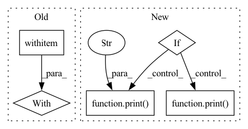

Pattern ID :10835
Before Change
//if not (self.applicable_on_mask or is_mask):
// return tensor_image
device = tensor_image.device
with torch .random.fork_rng(devices=(device,)):
torch.manual_seed(self.seed)
if len(tensor_image.size()) == 3:
if type(self).occurence():
return self.forward_sample_img(tensor_image)After Change
print("Running pointcloud")
pointcloud, image_tensor = args
return self.augment_pointcloud(pointcloud, image_tensor)
elif print( "Running Sampling Field")
return self.augment_sampling_field(args[0])
elif isinstance(args[0], torch.Tensor): // image
assert 3 <= len(args[0].size()) <= 4
print("Running image" )
return self.augment_image(args[0])
def __repr__(self):In pattern: SUPERPATTERN
Frequency: 3
Non-data size: 5
Instances Fragment ID: 37344831
Project Name: anguelos/tormentor
Commit Name: 30917b9c36b21a12bfb64f3249014679221324d8
Time: 2020-06-29
Author: anguelos.nicolaou@gmail.com
File Name: tormentor/base_augmentation.py
M Class Name: DeterministicImageAugmentation
N Class Name: DeterministicImageAugmentation
M Method Name: __call__(1)
N Method Name: __call__(3)
M Parent Class: object
N Parent Class: object
M File Name: tormentor/base_augmentation.py
N File Name: tormentor/base_augmentation.py
M Start Line: 78
M End Line: 105
N Start Line: 129
N End Line: 145
Before Change
errs.append(np.mean(np.square(prediction1_prime - prediction2)))
with np .errstate(divide="ignore"):
x, y = np.log(FLOAT_SCALES), np.log(errs)
filt = np.isfinite(y)
x, y = x[filt], y[filt]
if len(x) > 2:After Change
prediction2 = self.vector_prediction(
rprime, v, key, rank, merge_fun, join_fun, invar_mode, covar_mode)
if np.max(np.linalg.norm(prediction2, axis=-1)) > 1e2:
print("---" )
print( r)
print(v)
print(prediction1_prime)
print(prediction2)
print(np.max(np.square(prediction1_prime - prediction2))) Fragment ID: 37344841
Project Name: klarh/geometric_algebra_attention
Commit Name: 549321f82c9b20c24ecf43b58cb03935d980e18e
Time: 2022-01-14
Author: mspells@vectorinstitute.ai
File Name: tests/test_internals.py
M Class Name: AllTests
N Class Name: AllTests
M Method Name: test_rotation_covariance_vector(8)
N Method Name: test_rotation_covariance_vector(8)
M Parent Class:
N Parent Class:
M File Name: tests/test_internals.py
N File Name: tests/test_internals.py
M Start Line: 141
M End Line: 164
N Start Line: 118
N End Line: 136
Before Change
def model_image(fig, ax, model, image = None, showcbar = True, **kwargs):
if image is None:
with torch .no_grad():
model.sample(model.model_image)
image = model.model_image.data.detach().cpu().numpy()
imshow_kwargs = {After Change
}
imshow_kwargs.update(kwargs)
sky_level = 0.
if isinstance(model, models.Group_Model):
for M in model.model_list:
if isinstance(M,models.Sky_Model):
try:
sky_level = (10**(M["sky"].value)*model.target.pixelscale**2).detach().cpu().item()
print("subtracting sky level: " , sky_level)
break
except Exception as e:
print( e)
im = ax.imshow(
image - sky_level,
**imshow_kwargs,
) Fragment ID: 37344835
Project Name: connorstoneastro/autoprof
Commit Name: 53be3d025f16413cb88735d0e934f1282bd41a02
Time: 2022-12-12
Author: connorstone628@gmail.com
File Name: autoprof/plots/image.py
M Class Name: AnonimousClass
N Class Name: AnonimousClass
M Method Name: model_image(5)
N Method Name: model_image(5)
M Parent Class:
N Parent Class:
M File Name: autoprof/plots/image.py
N File Name: autoprof/plots/image.py
M Start Line: 47
M End Line: 68
N Start Line: 48
N End Line: 69